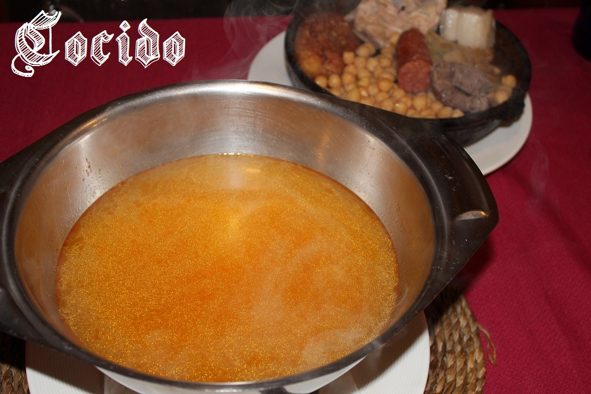
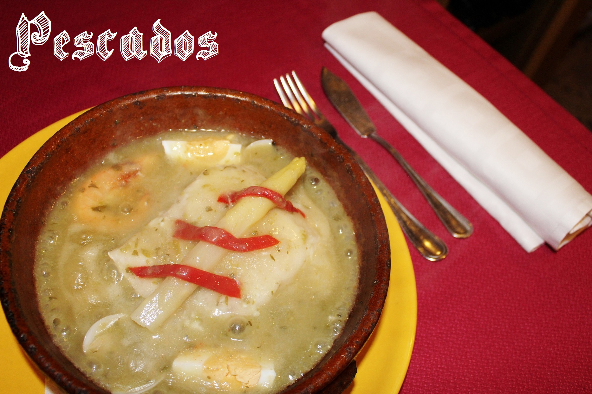

Cocido Castellano
El plato emblema del Mesón del Zorro. Servido completo con todos los avíos, en su versión para adultos y también infantil.
Ver cocido
Cocido castellano, carnes a la parrilla de ternera zamorana, pescados en cazuela de barro de Pereruela y postres caseros. Empresa familiar con vocación hostelera de generaciones.

El Mesón del Zorro es una empresa familiar con larga tradición hostelera en Zamora. La cocina la llevan Javi y Leo, y la sala Javi hijo y Fani, manteniendo el espíritu de cercanía y cariño por el oficio.
La filosofía es clara: platos tradicionales cocinados sin prisa, con productos de calidad y cercanía. Slow food en su sentido más auténtico: comer de manera consciente, valorando los sabores y la procedencia de cada ingrediente.
Platos de la gastronomía zamorana más auténtica, elaborados con productos de la tierra y cocinados como manda la tradición.
El plato emblema del Mesón del Zorro. Servido completo con todos los avíos, en su versión para adultos y también infantil.
Ver cocidoCazuelas, sopas, embutidos, quesos y ensaladas. Desde las gambas al ajillo hasta la cecina de León o el queso zamorano D.O.
Ver entrantesChuleta de ternera zamorana, chuletillas de cordero lechal, solomillo y pluma de cerdo cebón. Cocinadas a la brasa respetando los tiempos.
Ver carnesElaborados directamente al fuego en cazuelas de barro de Pereruela. Bacalao en pisto casero y merluza en salsa verde al estilo del Zorro.
Ver pescadosFlan de huevo, arroz con leche, tarta de queso, tocinillo de cielo, caña zamorana y más. Todos elaborados en nuestra cocina.
Ver postresAmplia carta con denominaciones de la tierra: D.O. Toro, D.O. Tierra del Vino, D.O. Arribes y más. Conservados a temperatura óptima.
Ver vinosPlatos tradicionales cocinados con cariño, sin prisa y con productos de calidad y cercanía.
4,7 sobre 5 en Google con más de 1.126 valoraciones. Estas son algunas de las opiniones de quienes nos han visitado.
Probablemente el mejor cocido de Zamora Ciudad y de la provincia. Los productos perfectamente cocinados y desgrasados para no hacerlo pesado.
Mesón típico de comida zamorana. Personal muy atento y profesional, con el dueño a los fogones y su hijo atendiendo la sala.
Comida tradicional, sin tonterías, con raciones generosas. La atención del camarero (Javier) de diez, un auténtico encanto.
Comida excelente. El menú con cocido zamorano ha sido un auténtico manjar; acompañamos con una jarra de vino de la tierra.
| Día | Comidas | Cenas |
|---|---|---|
| Lunes | Cerrado | Cerrado |
| Martes | 13:00 - 17:00 | - |
| Miércoles | 13:00 - 17:00 | - |
| Jueves | 13:00 - 17:00 | - |
| Viernes | 13:00 - 17:00 | 21:00 - 23:30 |
| Sábado | 13:00 - 17:00 | 21:00 - 23:30 |
| Domingo | 13:00 - 17:00 | - |
Se recomienda reservar, especialmente los fines de semana y festivos, ya que el comedor tiene un aforo de unas 40 personas. Puede llamar al 980 16 16 47 o escribir por WhatsApp en horario de 10:00 a 18:00.
Los lunes permanecemos cerrados. De martes a jueves y domingo, servicio de comidas de 13:00 a 17:00. Viernes y sábado, comidas de 13:00 a 17:00 y cenas de 21:00 a 23:30.
Sí, el cocido castellano se sirve todos los días de apertura como una de las especialidades principales del restaurante.
Estamos en la Calle Brahones 4, 49010 Zamora. En la zona hay varias opciones de aparcamiento cercano.
Sí. Disponemos de plato infantil (medallones de solomillo con patatas fritas, 11,90 euros) y menú de cocido infantil (17,90 euros), ambos para menores de 14 años.
Cocina tradicional zamorana: cocido castellano, carnes a la parrilla de ternera zamorana y cordero lechal, pescados en cazuelas de barro de Pereruela, y postres caseros. Filosofía slow food con productos de calidad y cercanía.
Calle Brahones 4, en pleno centro de Zamora. Llámanos, escríbenos por WhatsApp o ven directamente.